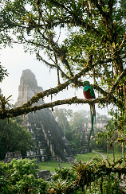
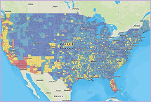
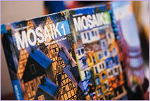

Brian Contreras
Tactile Curation: Making Computational Mediation Contestable
Digital infrastructures organize how people navigate public space, encounter cultural memory, and access institutions. My practice makes the rules behind these interactions perceptible and open to question. My parents' craft as jewelers taught me that technical precision matters most when it serves the person wearing the object—a material sensibility I bring into spatial computing and critical interaction design. My experience across conversational AI, UX strategy, and experimental installation, grounded in my perspective as a gay Guatemalan American, informs work that asks who is permitted to speak, who is mapped, and whose lived experience a system excludes. Through tangible prototypes and spatial interfaces, I translate computational processes into physical encounters, inviting publics to examine how technologies classify, guide, and represent them.
OF(F) THE GAZE stages machine perception as an immediate spatial encounter. A Boston Dynamics Spot robot navigates a grid of reflective tiles, placing the machine and the audience within a shared field of observation as the mirrored floor draws visitors' reflections into the work. The installation asks how people experience being seen, tracked, or mapped by technical systems whose operations remain opaque. Bringing robotic movement and human presence into the same physical environment shifts attention away from the robot as an isolated spectacle, focusing instead on the spatial relationships through which machine perception takes place.
- Role: Concept lead and installation architect
- Format: Robotic installation and spatial visualization
- Context: Ars Electronica Festival, Linz, Austria, 2023
The Agent is a site-specific acoustic performance that contrasts algorithmic automation with biological voice. Utilizing spoken word, reactive theatrical lighting, and spatial scenography, the piece critiques representation, agency, and individual autonomy within algorithmic networks. By translating algorithmic processing into an embodied acoustic environment, the performance examines how digital systems mediate human expression.
- Role: Spoken word artist, stylist, and scenographer
- Format: Acoustic performance and scenography
- Context: Ars Electronica Festival, Linz, Austria, 2023
Kynd examines how augmented reality and spatial audio can support orientation for people experiencing memory loss. The prototype shifts focus away from screen-based prompts and toward localized audio cues delivered within the user's immediate surroundings, treating familiar voices and spatial position as primary interaction materials. Focusing on the form, timing, and acoustic placement of a cue allows the prototype to offer useful context while preserving user agency.
- Format: Augmented-reality prototype and spatial audio interaction
- Context: MIT Reality Hack, Cambridge, MA, 2026; Honorable Mention, Community Hack
Re-CREATE turns the gallery into a studio for participatory environmental modeling, where visitors arrange physical objects to construct miniature rooms inside a light-controlled box. Participants select an AI-generated background and customize programmable LED lighting before photographing their room to add it to a shared online house. Physical arrangements become a tangible method for proposing, comparing, and revising possible environments. Connecting tactile decisions with responsive digital media makes collective spatial design a negotiated public activity.
- Format: Participatory installation and interactive environmental modeling
- Context: Art & Science Symposium, Aalborg University, Denmark, 2023
Touch Grass combines synthetic turf, gingham fabric, and digital tags to stage an artificial outdoor gathering inside the gallery. Here, familiar materials associated with picnics and leisure acquire new meanings within a constructed environment. Bringing tactile textures and digital representation into the same room prompts visitors to examine how memory, sensory association, and material contrasts shape the personal and social meaning of place.
- Format: Experimental installation and spatial media
- Context: Tropical Lab, Singapore, 2023
Amerihcc Licc explores genetic identity and bio-ethics through chimerical visual metaphors. This single-channel video installation utilizes projection mapping and generative patterns to flatten the visual boundaries between organic biomaterial and manufactured textiles, addressing questions of biological heritage and self-conception.
- Format: Video installation and projection mapping
- Context: TTTLabs, Crete, Greece, 2024
At Amazon Alexa, I contributed to language-data and localization workflows supporting the initial Spanish- and Italian-language launches, connecting regional colloquialisms with standardized intent categories for natural language understanding. At Versay Solutions, I directed bilingual voice-interface design and analysis. At Red Trig, my research extended to AI, digital methods, and platform governance. These industry roles demonstrated how language classifications and interface rules determine which utterances a system recognizes and which responses it makes available. This directly motivates my artistic practice, bringing computational assumptions into spatial and participatory media where they become perceptible and open to critique.


My Erasmus Mundus Joint Master's thesis, Pokémon Phenomenon: Game Mechanics and its Effect on Narratives, examined the relationship between interactive mechanics and storytelling across the Pokémon media universe. Through ludological analysis, I investigated how rules, virtual environments, and player actions structure interactive experience and steer narrative across media. This establishes a conceptual bridge to my current research into how designed rulesets enforce constraints and govern what participants can experience in civic and spatial environments.

As an organizational systems and HCI researcher, my written work spans critical AI studies, media arts cultures, and algorithmic platform governance. The following selected works anchor my ongoing doctoral research:
- Master's Thesis (2024): Pokémon Phenomenon: Game Mechanics and its Effect on Narratives (University of Łódź / University for Continuing Education Krems / Aalborg University). [Download Complete Thesis PDF ↗]
- Doctoral Research Proposals (2026): Comprehensive empirical proposals examining human-AI co-agency, interactional bias, and participatory workflows in organizational and creative settings. [Request Research Dossier via Email →]
- Recognition: Contreras Scholarship (TSAF). [View Award Letter PDF ↗]
I investigate computation through the everyday encounters it structures: navigating public space, recognizing another person, and negotiating a shared environment. Translating digital rulesets into tangible interactions allows my practice to examine how the architectures governing daily life can become easier for communities to perceive, question, and reshape.